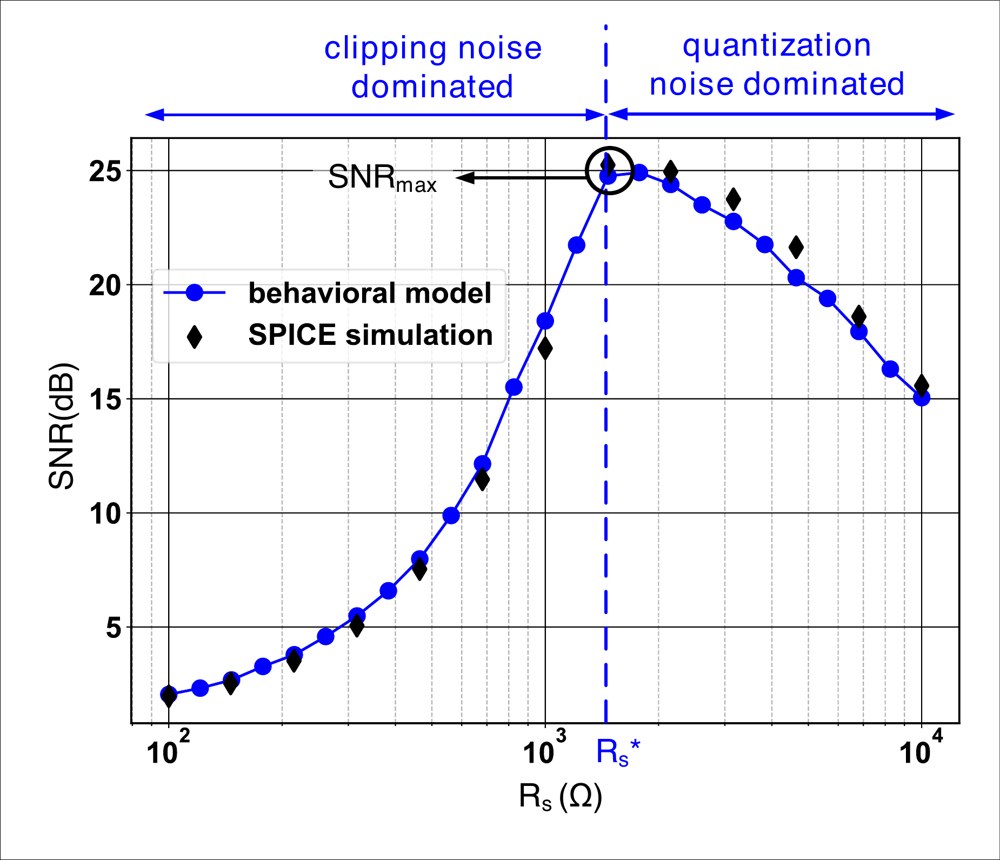

Balance errors
Clipping and quantization contributions identify the useful sensing point.
Analytical optimum
Changing the sensing resistance trades clipping against quantization. Their balance reveals the best attainable compute SNR for the selected device and dot-product dimension.

How to read the maximum
Clipping and quantization contributions identify the useful sensing point.
Resistive contrast provides diminishing returns beyond the 12–15 range.
The circuit-level optimum predicts the most accurate mapped network point.